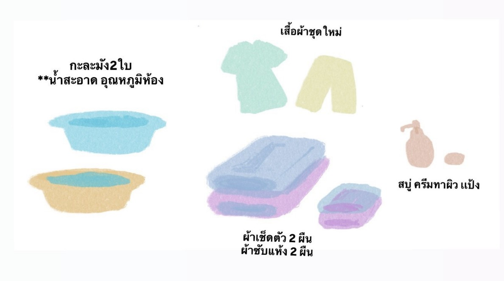

อุปกรณ์
กะละมัง 2 ใบ
ผ้าเช็ดตัว 2 ผืน (สำหรับเช็ดส่วนบนและส่วนล่าง)
ผ้าซับแห้ง 2 ผืน
เสื้อผ้าชุดใหม่
ผ้าคลุมตัว
สบู่เหลวหรือสบู่ก้อน
ครีมทาผิว/แป้ง
และน้ำสะอาดอุณหภูมิห้อง

ขั้นตอนการเช็ดตัว
1.เตรียมอุปกรณ์ให้พร้อม
ควรมีผ้ายางรองเพื่อป้องกันเตียงเปียกชื้น
2.ล้างมือให้สะอาดก่อนทำการเช็ดตัวผู้สูงอายุทุกครั้ง
3.ใช้ผ้าคลุมลำตัวจนถึงช่วงลำคอ และถอดเสื้อผ้าออก
4.ใช้น้ำอุณหภูมิห้องแล้วใช้ผ้าชุบน้ำบิดให้แห้ง
5.เริ่มเช็ดจากใบหน้าลงมาลำคอ
6.ดึงผ้าลงมาบริเวณเอว เเล้วเริ่มทำความสะอาดลำตัว
7.ดึงผ้ามาปิดส่วนบนก่อน เเล้วจึงเริ่มทำความสะอาดท่อนล่าง
จากนั้นเริ่มเช็ดด้านหลังโดยการคลุมผ้าท่อนล่าง
8.การทำความสะอาดบริเวณอวัยวะสืบพันธุ์ภายนอก
เป็นส่วนสำคัญที่ผู้ดูแลควรหมั่นทำความสะอาดเมื่อปัสสาวะ/อุจจาระทันที
9.เมื่อเช็ดเสร็จแล้ว ทำการใส่เสื้อผ้าให้ผู้สูงอายุ
การเช็ดตัวควรเช็ดให้แห้งสนิทเพื่อป้องกันความอับชื้น
และควรทาโลชั่นเพื่อป้องกันผิวแห้ง
***โดยทุกอย่างต้องเน้นที่ความสะอาด
และความปลอดภัยสำหรับตัวผู้สูงอายุ
**วิดีโอสำหรับการศึกษาเพิ่มเติม